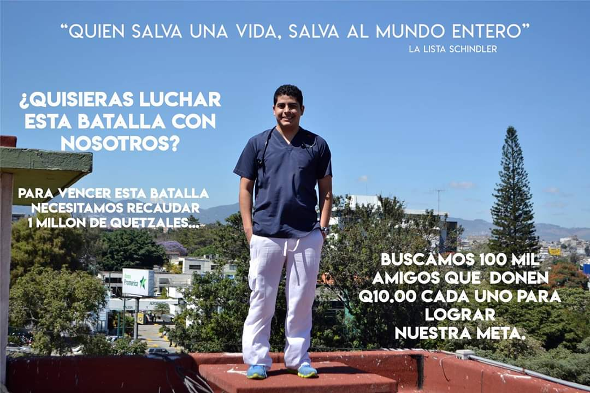

Doctor Luis Fernando Morán, de 27 años , eligió dedicar su vida a salvar vidas estudiando medicina, hoy papá de Sebastian de 1 año de edad, esposo, hijo, primo, amigo, un ser humano con tantos sueños por cumplir, a quien lo conoce le es imposible no amarlo y ver La Luz con la que vino a este mundo, HOY necesita nuestra ayuda para salvar su vida, en Mayo del 2018 fue diagnosticado con Cancer de Hodgkin, por el cual recibió el tratamiento correspondiente y en noviembre del mismo año su tomografía nos indicó que todo estaba resuelto, pero hoy nuevamente esta terrible enfermedad ha regresado a su vida y requiere de un tratamiento muy costoso por el cual necesitamos recaudar un millón de quetzales, buscamos 100 mil corazones que quieran unirse a nuestra batalla donando Q10.00 cada uno y poder cumplir su tratamiento ¡¡AYUDANOS A SALVAR SU VIDA!!
Las manos que dan nunca están vacías... Dios nos ha mandado a amar y por fe creemos en un milagro para nuestra familia, seremos testimonio de su grandeza!!!

Puedes donar por medio de depósito o transferencias bancarias. También puedes dar aviso en la página de Facebook: “Cienmilcorazonesporluisfer” y los familiares llegarán contigo a recoger la donación a donde indiques.
O haciendo Click Aqui